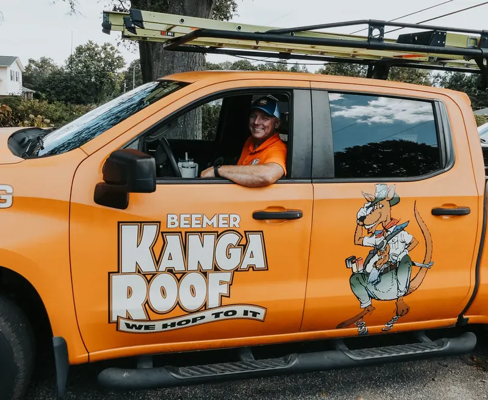
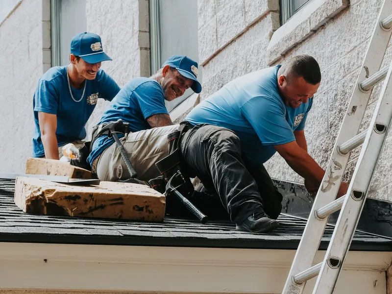
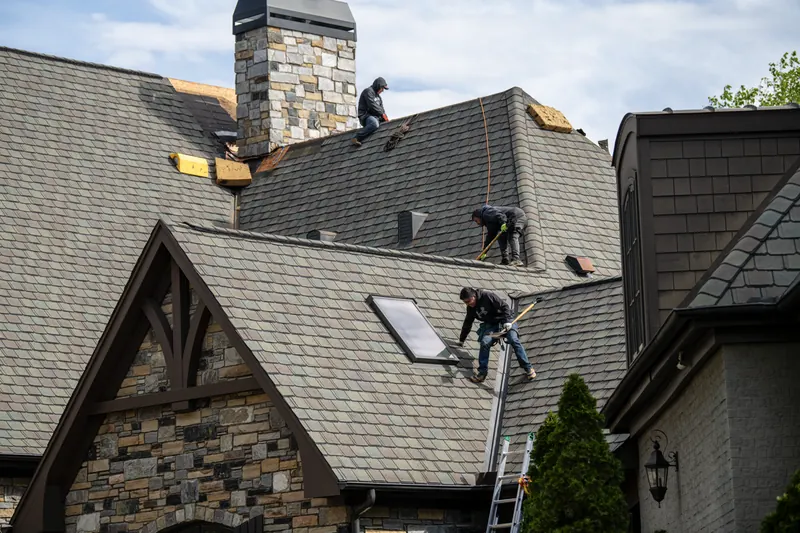

Roof trouble in the Upstate?
We hop to it.
Beemer KangaRoof® repairs, replaces and maintains roofs on homes and businesses across Greenville, Spartanburg and Anderson.
- 4.9★ from 300+ reviews
- BBB A+ rated
- Licensed & insured

What’s going on with your roof?



Honest work. Local service. Roofs that last.
We document every inspection with photos, explain your options clearly, and back our work with industry-leading warranties.
- 4.9★from 300+ reviews
- BBB A+rated
- 50+ yearsof combined roofing experience
- $0for an on-site inspection

For your home
Everything from a single leak to a complete replacement.

For your business
Flat, metal and coated roofs on offices, warehouses and retail buildings.
Roofing problems we solve
Roof leaks and water intrusion
We quickly locate leak sources and stop water from damaging ceilings, walls, insulation, and electrical systems.
Missing, lifted, or damaged shingles
Wind, age, or storms can loosen shingles and expose your roof to leaks. We repair and replace them.
Storm, wind and hail damage
Upstate storms can cause hidden roof damage. We inspect, repair, and document it for insurance when needed.
See 6 more problems
Damaged or failing flashing
Chimneys, vents, skylights, and roof edges are common leak points. We reseal and reinforce flashing.
Sagging or aging roofs
If your roof is nearing the end of its lifespan, we evaluate it and recommend repair or replacement.
Poor ventilation or attic moisture
Improper airflow causes heat buildup, mold, and shortened shingle life. We correct it.
Gutter and drainage problems
Clogged or damaged gutters can send water under shingles. We repair, clean, and replace them.
Skylight leaks
Whether it is worn seals or old materials, we diagnose the leak and give you repair or replacement options.
General wear and tear
Granule loss, curling shingles, nail pops, and cracked sealant are early warning signs. We address them first.
Seven hops from first call to finished roof
Call and scheduling
Inspection, with photos
Written estimate
Project planning
Installation
Cleanup and walkthrough
Ongoing support
What customers say
★★★★★Showed up on time and repaired roof after a storm. Great experience.
Tim Elder
★★★★★Patrick was great. He explained all that needed to be done. All the workers did a great job. Thank you all. Hannah is awesome also.
Sue Garcia
★★★★★On time and very professional, courteous and friendly. They did what they needed to do and left.
Kenneth Nowicki
Trusted by local businesses and property managers
Greenville Zoo, Stone Property Management, ITW Hartness, OP Mobility and Clear Spring Fire Rescue.

The Overhead Care Club®
$179.40* a year
A worry-free roof maintenance membership: your attic and roof inspected every year, 17 critical components checked.
- Priority scheduling
- Skylight cleaning
- Repair discounts
- Lifetime repair warranty
*Base rate. Final cost may vary depending on roof type, home design, or other special conditions.
See all member benefitsServing Greenville and the Upstate
- Greenville
- Simpsonville
- Greer
- Anderson
- Spartanburg
- Mauldin
- Taylors
- Easley
- Travelers Rest
And surrounding Upstate SC communities. Not sure we cover your street? Just give us a call.
Common questions
Are your roof inspections really free?
Yes, every inspection is 100% free. No obligation. No pressure. Just clarity about your roof’s condition.
Do you offer same-day emergency roof repair in Greenville?
We offer weekday same-day emergency service, but not full same-day repairs. Here is exactly what we provide:
- Same-day emergency response Monday to Friday (emergency fee applies)
- A temporary repair to stop leaks and prevent further damage
- A scheduled full, permanent repair once the roof is safely inspected
We do not offer same-day emergency service on weekends. After hours or on weekends, we can schedule the next available appointment for the following business day.
How long does a roof replacement take in Greenville?
Most Greenville roof replacements are completed in 1 day. Larger homes, complex rooflines, or specialty materials like metal or tile may take 2 to 3 days. Our team provides a detailed schedule and handles tear-off, installation, cleanup, and disposal.
Not sure what your roof needs?
Every inspection is free, with photos of what we find. No obligation. No pressure.
Call for a free inspection(864) 412-2573